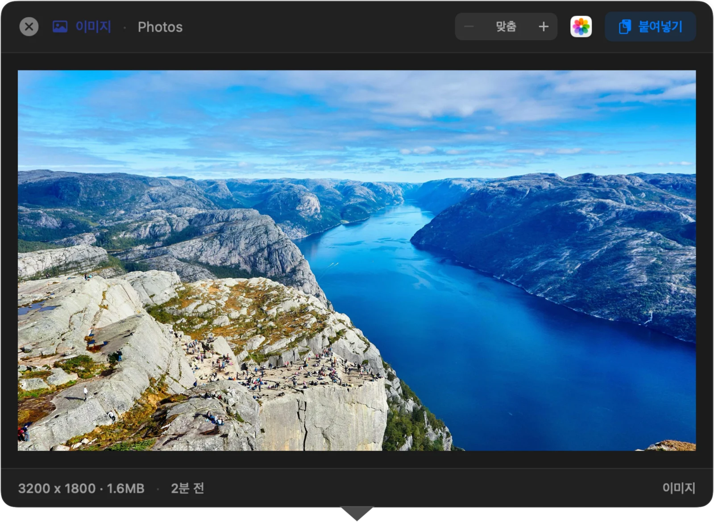
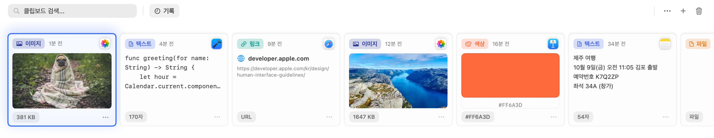
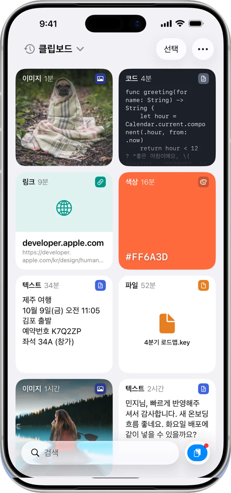
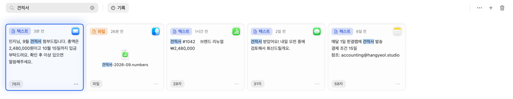
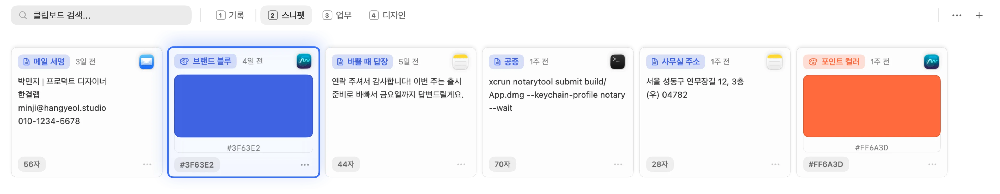
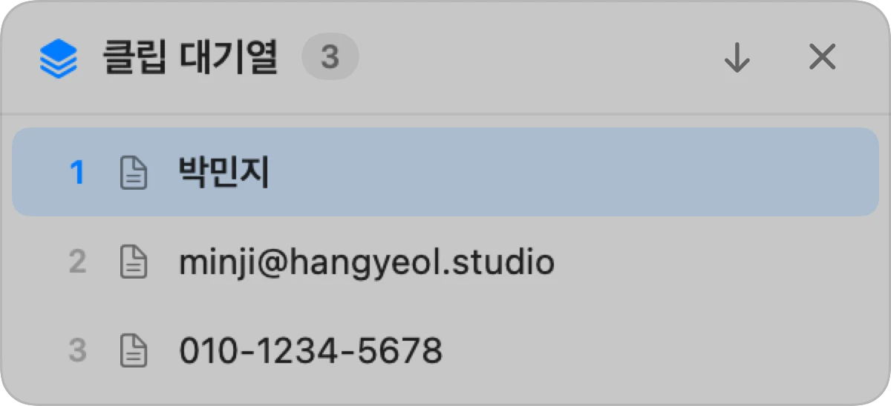
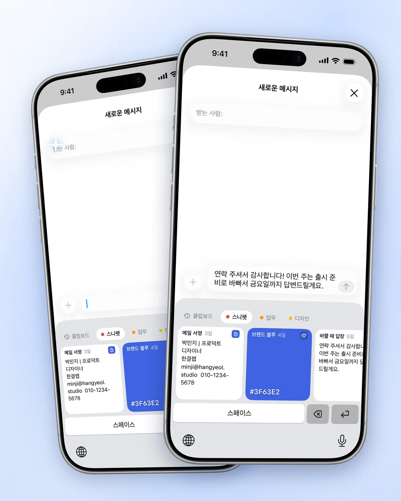

복사한 건 전부 남아요
텍스트, 이미지, 링크, 파일, 색상까지 기록에 쌓여요. 카드를 한 번 클릭하면 다시 클립보드로 돌아와요.
Mac용 클립보드 매니저예요.
⇧⌘V를 누르면 복사 기록이 화면 아래에서 올라와요.
Mac은 무료 오픈소스 · macOS 14 이상 · iPhone 동기화는 App Store판



텍스트, 이미지, 링크, 파일, 색상까지 기록에 쌓여요. 카드를 한 번 클릭하면 다시 클립보드로 돌아와요.
패널을 연 채로 입력하세요. 내용이나 제목으로 찾고, 유형과 날짜로 좁힐 수 있어요.

답장 문구, 코드 조각, 브랜드 색처럼 반복해서 쓰는 것들을 탭으로 묶어 두세요. ⌘1부터 ⌘9로 바로 이동해요.

붙여넣기 전에 내용을 확인하세요. 텍스트는 ⌘E로 그 자리에서 고칠 수 있어요.
이름, 이메일, 전화번호를 먼저 복사해 두세요. ⌘V를 누를 때마다 다음 항목이 붙여넣어져서, 앱 사이를 오갈 필요가 없어요.
클립 대기열은 별도 권한이 필요 없어요. 사용법 보기


App Store판 전용 · iOS 26 이상
두 버전 모두 같은 저장소에서 빌드해요. Mac에서는 하나만 실행하세요.
무료
DMG 또는 Homebrew. 오픈소스 빌드예요.
DMG 다운로드brew install --cask mobrava/tap/clipbara7일 무료 체험
이후 한 번 구매로 Mac과 iPhone 모두. 구독은 없어요.
App Store에서 받기DMG는 Developer ID Application: MinSang Kim (5DH57J8HLC)으로 서명하고 Apple 공증을 받았어요. 공식 다운로드 경로
Mac용 DMG와 Homebrew판은 무료 오픈소스예요. App Store판은 7일 무료 체험 후 한 번 구매하면 Mac과 iPhone에서 사용할 수 있어요. 구독은 없어요.
iCloud 동기화와 iPhone 앱이 필요하면 App Store판을, Mac에서 로컬 기록과 선택적인 바로 붙여넣기를 쓰려면 무료 DMG나 Homebrew판을 받으세요. 두 버전의 기록은 따로 저장돼요. 설정 → 일반 → 백업에서 내보내기와 가져오기로 옮길 수 있어요.
기본 동작은 선택한 내용을 클립보드에 넣고 패널을 닫는 거예요. 사용하던 앱에서 ⌘V를 누르면 붙여넣어져요. DMG판에서는 설정 → 붙여넣기에서 활성 앱에 붙여넣기를 켜고 손쉬운 사용 권한을 주면 이 단계도 자동으로 해줘요. App Store판에는 바로 붙여넣기가 없어요.
아니요. iOS에서는 백그라운드 클립보드 감시가 허용되지 않아요. 붙여넣기 버튼, 다른 앱의 공유 메뉴, 앱을 열 때 저장하는 옵션으로 내용을 추가해요. iCloud 동기화를 켜면 Mac에서 복사한 지원 항목도 볼 수 있어요. 복사한 파일은 동기화되지 않아요.
Mac에 로컬로 저장돼요. App Store판에서 동기화를 켜면 개인 iCloud 데이터베이스를 사용해요. Clipbara는 클립을 보관하는 개발자 서버나 분석 도구를 사용하지 않아요. 설정에서 앱 제외, 보관 기간, 기록 삭제를 관리할 수 있어요.
공식 GitHub 저장소 mobrava/Clipbara에 이슈를 남겨 주세요. macOS나 iOS 버전, Clipbara 버전, App Store판인지 DMG판인지를 알려주시면 확인에 도움이 돼요. 비밀번호나 개인적인 복사 내용은 올리지 마세요.